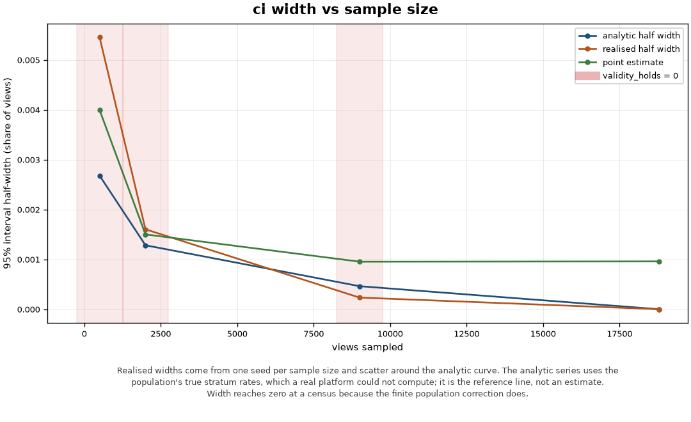
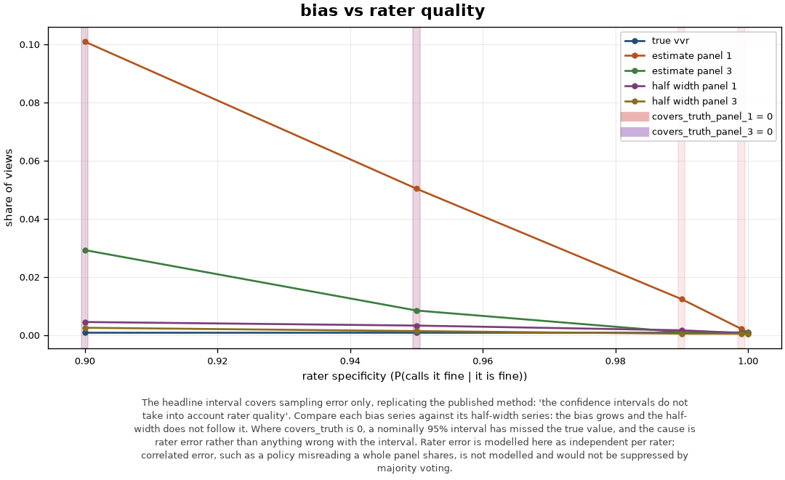
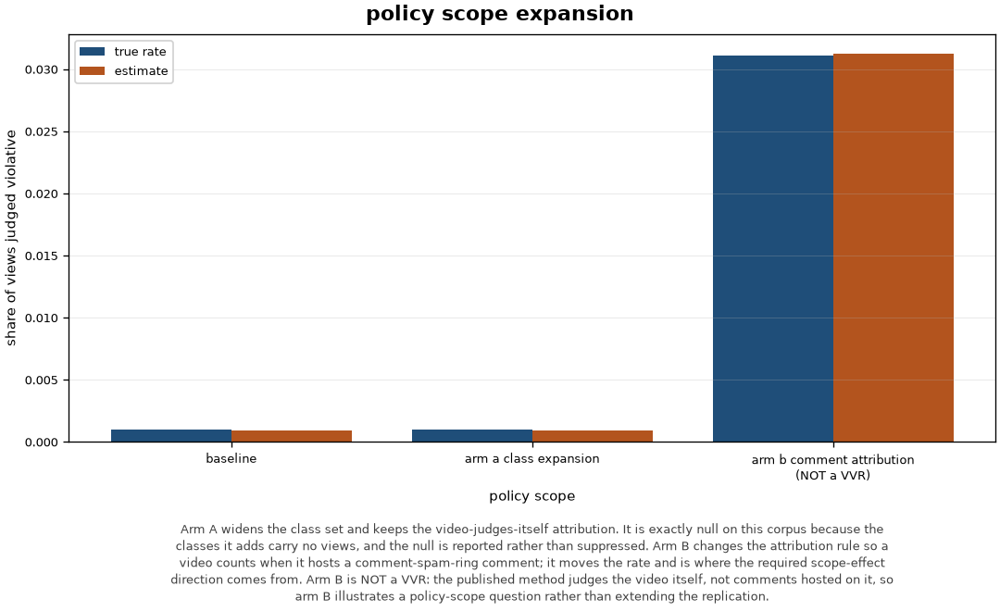

Session session-2d3ca01015f8.
| stamp | value |
|---|---|
| generated (IST) | 2026-08-01T21:44:58.910778+05:30 |
| code (git SHA) | 1844024cc35033573fcfefedbd3d20019ca2eb78 |
| measurement seed | 42 |
| dataset digest | 060c60d71ac4acf67046f49e7fb581160937355ce1f88c3a2b3d118f48860e1d |
| dataset seed / scale | 42 / 1 |
| policy corpus | 1.0.0 (9dd656fb9fd9) |
| active prompt versions | classify.threat_class=71610d32c1e6, evidence.pivot=f67159a912aa, memo.statement=ff0bce78a2dd, triage.rationale=459d5860b7fe |
0.0953% (95% CI 0.0720% to 0.1186%), n=9000 of N=18780. The interval covers sampling error only.
VVR: 0.0953% 95% CI [0.0720%, 0.1186%] scope=baseline allocation=optimal n=9000 of N=18780 stratum N_h n_h calls p_h ----------------------------------------------------- lowest_risk 9157 1532 0 0.0000% middle_risk 9526 7452 14 0.1879% no_score_available 97 16 0 0.0000% normal approximation validity: ok every sampled stratum has n_h >= 2 FAIL expected violative calls 8.58 >= 10 ok expected non-violative calls 8991.42 >= 10 ok interval lies inside [0, 1] without clipping FAIL no under-sampled stratum returned an all-or-nothing rate: lowest_risk, no_score_available panel disagreement rate: 0.00% interval covers sampling error only; rater quality is not in it
stratum N_h share true p_h ------------------------------------------------ lowest_risk 9157 48.8% 0.0000% low_risk 0 0.0% 0.0000% middle_risk 9526 50.7% 0.1890% highest_risk 0 0.0% 0.0000% no_score_available 97 0.5% 0.0000% ------------------------------------------------ total 18780 100.0% 0.0958%
| scope | rate | is a VVR |
|---|---|---|
| arm_a_class_expansion | 0.0889% | yes |
| arm_b_comment_attribution | 3.1224% | NO |
Governance activity (MEASURED, counted from session events) ------------------------------------------------------------------ gate rejections 0 mandate violation attempts 0 prompt injection signals 0 pivots refused before review 0 verification passes 2 verification failures 0 human decisions recorded 0 memo/output verification pass rate: 100.0% NOTE: no control above fired. Every rejection, violation attempt, injection signal, refused pivot and verification failure is zero. That is not evidence the governance layer works: it means nothing in this session exercised a gate, a mandate ceiling, the firewall or the verifier, so this session supports no claim about any of them. Passing verifications and recorded human decisions are counted above and are not controls firing; they are the ordinary path.
No published per-case review-time benchmark exists to compare these figures against. TSPA, which defines the metric, notes that review time 'may include time waiting in queues or going through automatic processes, or only the time when the reviewer is actively working on a specific review', and warns that 'there is considerable industry variation in both precise definitions and naming conventions'. Every minute figure below is a stated assumption, not a measurement, and the delta is a property of the assumption table.
Analyst minutes: a MODELLED comparison over stated assumptions ================================================================== No published per-case review-time benchmark exists to compare these figures against. TSPA, which defines the metric, notes that review time 'may include time waiting in queues or going through automatic processes, or only the time when the reviewer is actively working on a specific review', and warns that 'there is considerable industry variation in both precise definitions and naming conventions'. Every minute figure below is a stated assumption, not a measurement, and the delta is a property of the assumption table. Assumptions (every figure below is assumed, none is measured) ------------------------------------------------------------------ step baseline assisted delta triage and case selection 4.0 1.0 3.0 evidence gathering 25.0 8.0 17.0 memo drafting 20.0 7.0 13.0 citation and policy verification 8.0 3.0 5.0 human decision and sign-off 3.0 3.0 0.0 ------------------------------------------------------------------ per case 60.0 22.0 38.0 Over 1 case(s), the assumption table implies a difference of 38.0 minutes between the two arms. That figure is a property of the table above and carries no evidence that either arm would occur in practice. One-way sensitivity (+/-50% on each assumed assisted time, alone) ------------------------------------------------------------------ step delta low delta high break-even triage and case selection 37.5 38.5 4.0 evidence gathering 34.0 42.0 25.0 memo drafting 34.5 41.5 20.0 citation and policy verification 36.5 39.5 8.0 human decision and sign-off 36.5 39.5 3.0 ------------------------------------------------------------------ The modelled difference is most sensitive to 'evidence gathering', which moves it by 8.0 minutes on its own. 'break-even' is the assisted minutes at which that step contributes nothing to the difference. Read it as the threshold an assumption would have to cross before the sign of the comparison changed. None of these thresholds has been measured.


